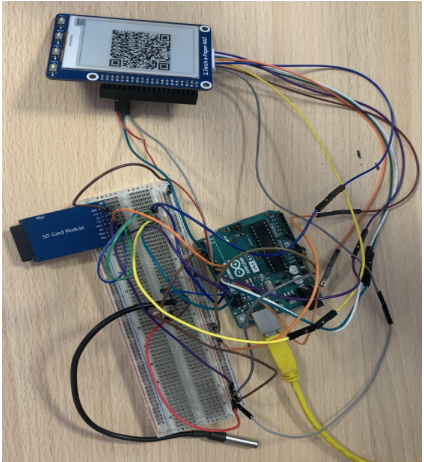

Profil personnel
Technicien supérieur en systèmes numériques, je maîtrise la qualification d'équipements électroniques, la programmation embarquée, les réseaux de communication, ainsi que la sécurisation et le stockage des données informatiques.
Objectifs de carrière
Passionné par les systèmes embarqués et l'électronique, mon objectif est de me spécialiser dans le développement de solutions IoT et la gestion de projets technologiques innovants. À court terme, je souhaite rejoindre une équipe de développement pour travailler sur des systèmes critiques et évolutifs. À long terme, je vise à devenir chef de projet en ingénierie électronique.
Éducation
BTS Systèmes Numériques - option électronique et communication, Lycée Vauvenargues
- Informatique : Systèmes d’exploitation Linux, Windows, Android ; Langages : C/C++, Java, PHP, HTML, UML, Qt
- Réseaux : TCP/IP, Ethernet, services Web, routeurs, serveurs
- Électronique : Microcontrôleurs, microprocesseurs, FPGA, PCB
- Communication : bus de terrain, liaison série, USB, Xbee, Wifi
Formation Prévention et Secours Civiques de niveau 1 (PSC1)
Projet de système embarqué de surveillance de température
En 2024, j'ai réalisé un projet visant à créer un système embarqué capable de mesurer et d’enregistrer la température durant le transport d'aliments frais. Ce système garantit le respect des conditions de conservation, permettant une visualisation des données à l'aide d'un QR code pour assurer une chaîne de froid optimale.
Technologies utilisées : C/C++, capteurs de température, microcontrôleurs, UART, SGBD
Résultats : Suivi en temps réel de la chaîne du froid avec un système embarqué précis, réduction des pertes de produits alimentaires.
Expérience professionnelle
Stage à Insua Informatique (05/06 - 16/07 2023)
- Assemblage de composants, création d’ordinateurs
- Résolution de problèmes matériels
- Installation de matériel informatique chez les clients
- Vente, télémaintenance, et SAV
Compétences et savoir-faire
- Maîtrise des logiciels bureautiques : Excel, Visual Studio, Word, PowerPoint
- Création de projet
- Esprit d'équipe
- Capacité d’adaptation
- Programmation embarquée : C/C++, Qt, Linux
- Développement Web
Intérêts et loisirs
Je pratique le surf, la natation, la musculation, et je m'intéresse aux nouvelles technologies, à la programmation et à la digitalisation.